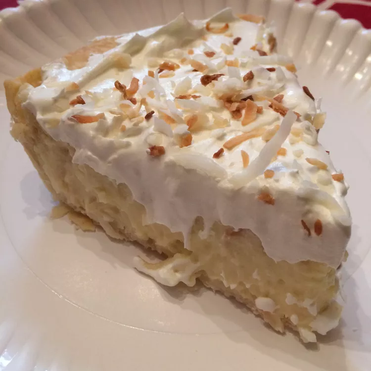

Old-Fashioned Coconut Cream Pie

Description
Coconut cream pie recipe that's tried and true.
It took many years of searching and baking to
find the right one, and this is it. Enjoy!
Ingredients
- coconut
- half-and-half
- white sugar
- all-purpose flour
- eggs
- salt
- vanilla extract
- pie shell
- whipped topping
Steps
- Preheat the oven to 350 degrees F (175 degrees C).
Spread coconut on a baking sheet.
- Bake in the preheated oven, stirring occasionally,
until golden brown, about 5 minutes.
- Combine half-and-half, sugar, flour, eggs, and
salt in a medium pot. Bring to a boil over low heat,
stirring constantly. Continue cooking and stirring for
2 minutes more.
- Remove the pan from the heat and stir in 3/4 cup
toasted coconut and vanilla; reserve remaining
toasted coconut for garnishing the pie.
- Pour custard into pie shell and chill until firm,
about 4 hours.
- Top with whipped topping and reserved toasted coconut.